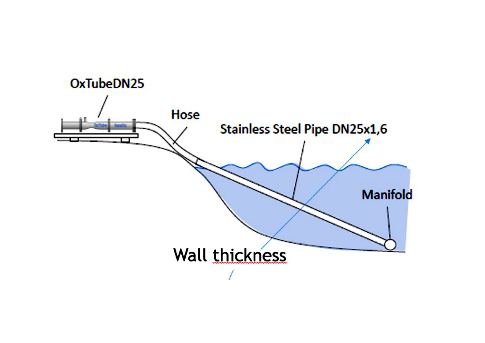

Hiilikrediitit · ennallistamiskrediitit
Krediitti on mittaus paperityön kanssa.
Markkinoilta puuttuu yksiköitä joihin voi osoittaa. Järvellä on koordinaatit, syvyys, sedimentti ja seurantatietue. Emme myy arviota jostakin vältetystä päästöstä jossain — myymme muutosta nimetyssä paikassa, mitattuna ennen ja jälkeen jonkun muun kuin meidän toimesta.
Hiilikrediitit — mistä tonnit tulevat
Hapeton sedimentti on anaerobinen ympäristö. Anaerobinen sedimentti tuottaa metaania, joka poistuu vesistöstä ja päätyy ilmakehään. Kun happi palautetaan syvänteeseen, metaania tuottavat olosuhteet poistuvat.
Mekanismi
Metaanin muodostuminen järven sedimentissä on hapesta riippuvainen prosessi. Tämä on vakiintunutta limnologiaa, ei omistusoikeudellinen väite, eikä jotain jota OceanSite on mitannut.
Määrä
Kreditoitavaa on se päästö joka ei tapahtunut, mitattuna kyseisen vesistön dokumentoitua tilaa vasten ennen toimenpidettä.
Näyttö
Jatkuva anturidata sekä näytteenottoon perustuva todentaminen krediittijakson ajalta, riippumattoman osapuolen tekemänä.
Heikkous jota emme piilota
Vältetyn metaanin kvantifiointi vesistön mittakaavassa on vaikeampaa kuin hapen mittaaminen. Jokainen ostaja kysyy miten tonnit on johdettu, ja on oikeassa kysyessään.
Ennallistamiskrediitit — sama hanke, eri ostaja
Elpyvä vesistö on se yksikkö jota luonnonennallistamis- ja monimuotoisuuskehykset on suunniteltu ostamaan. Sen ostavat eri budjetit, eri säännöillä ja eri syistä kuin hiilen.
Mitä kreditoidaan
Dokumentoitu ekologinen elpyminen määritellyssä vesistössä sen omaa lähtötasoa vasten — ei muualla laskettu kompensaatio.
Miksi se on kestävä
Toimenpide on fyysinen ja paikan päällä. Sen voi tarkastaa, mitata uudelleen, ja jos se lakkaa toimimasta, sen näkee lakanneen.
Kuka sen ostaa
Velvoiteperusteiset ostajat (luvat, kompensaatiovaatimukset) ja vapaaehtoiset ostajat, joilla on paikallisia tai valuma-aluetason sitoumuksia.
Päällekkäisyys
Hiili- ja ennallistamisyksiköt syntyvät yhdestä toimenpiteestä. Voidaanko molemmat laskea liikkeeseen ja myydä, ja kenelle, on sääntökysymys — ks. avoin kohta alla.
Miten hanke etenee
1. Lähtötaso
Syvänne kartoitetaan ennen kuin mitään asennetaan. Tämä on dokumentti jota vasten jokainen myöhempi väite mitataan, eikä sitä voi jälkikäteen rekonstruoida.
2. Toimenpide
Kohteeseen mitoitettu OxTube-hapetus, ohjaus ja anturointi toimitettuna ryhmän sisältä.
3. Seurantajakso
Jatkuva liuenneen hapen ja tukevien parametrien mittaus koko krediittijakson ajan, ei näytteenottona sen päissä.
4. Todentaminen ja liikkeeseenlasku
Tuloksen riippumaton varmentaminen, sitten liikkeeseenlasku sovellettavan metodologian ja rekisterin mukaisesti.

Näin järviasennus rakentuu: OxTube-yksikkö pysyy rannalla; veteen menevät vain putki ja pohjan jakotukki.
Mitä emme väitä
Ensin mittaus, sitten instrumentti.
Lähtötason mittaus voi alkaa ennen kuin krediitin reitti on ratkaistu — ja tässä järjestyksessä aloittaminen ei menetä mitään, kun taas toisessa järjestyksessä aloittaminen menettää koko hankkeen.
Aloita lähtötasosta